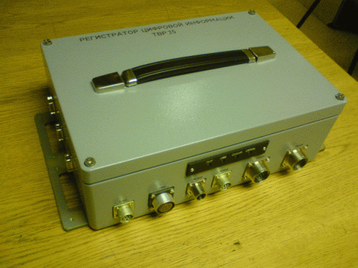

ФГУП "Всероссийский научно исследовательский институт автоматики им. Н.Л.Духова" |

Блок регистрации (БР) предназначен для формирования до четырех (восьми) каналов регистрации совместно с геофизическими датчиками с привязкой аналого-цифрового преобразования сигналов к системе единого времени (СЕВ), накопления непрерывной цифровой информации (НЦИ), контроля работоспособности каналов регистрации, выдачи НЦИ и служебной информации по интерфейсу Ethеrnet во внешние устройства.